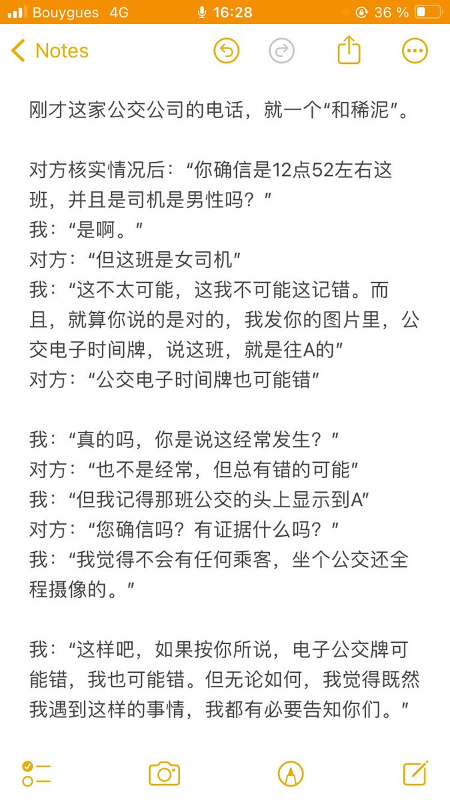

@garrulous_abyss 抱抱…辛苦了…
感觉和我正好相反，我是只要确认对方没有主观恶意，甚至只要不能确认对方的确有主观恶意，受到侵害的只有我自己的情况下，我都很容易就会“没关系的人都可能做的事情不好的嘛…”；如果对方主动道歉或者提出补偿的话，甚至会觉得不好意思怀疑是不是自己表现得太过分了….

感觉和我正好相反，我是只要确认对方没有主观恶意，甚至只要不能确认对方的确有主观恶意，受到侵害的只有我自己的情况下，我都很容易就会“没关系的人都可能做的事情不好的嘛…”；如果对方主动道歉或者提出补偿的话，甚至会觉得不好意思怀疑是不是自己表现得太过分了….

跟我预想的展开几乎一模一样。
即使我真的是那种，哪怕坐个公交，都要全程摄像摄影的人。。。公交公司也可以回我说：“这个司机他确实说错了。但这不是歧视，不是恶意行为。这纯粹是因为，他前一天有家庭问题，当天状态不好”。
但这都不重要。重要的是，对方做错了事，我不能让对方“做了错事却零成本” https://t.co/6N4t2oIJGg https://t.co/n4DY7m4j12
即使我真的是那种，哪怕坐个公交，都要全程摄像摄影的人。。。公交公司也可以回我说：“这个司机他确实说错了。但这不是歧视，不是恶意行为。这纯粹是因为，他前一天有家庭问题，当天状态不好”。
但这都不重要。重要的是，对方做错了事，我不能让对方“做了错事却零成本” https://t.co/6N4t2oIJGg https://t.co/n4DY7m4j12